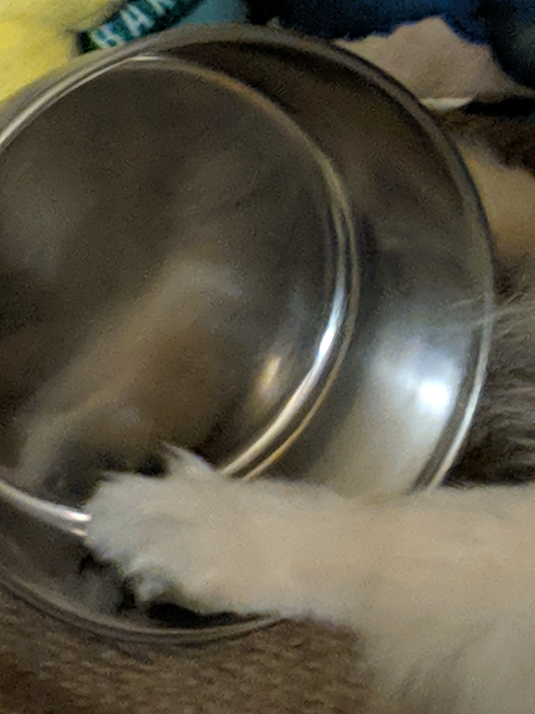
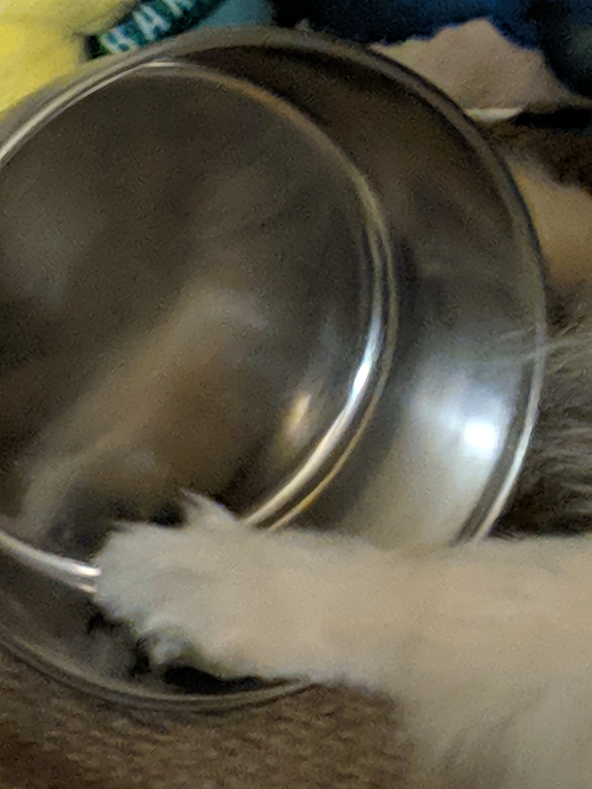

DOG BLOG
A Series of Unfortunate Teslas
Summer 2018
Written by Julia H (Author Bio)Of course such a fluffy dog needs a lot of water, but if im gonna leave her home alone and/or take her out soon I dont let her drink all the water she wants. BUT shes kind of a brat so sometimes she'll passive aggressively make a point by dramatically licking her empty bowl... she doesn't realize its for her own good T_T
Exhibit A


Those are mushed up carrots by the way.. since she's a picky eater, i have to add fun things (like carrots but her favorites are yogurt, rice, and eggs) so thats why there are little orange things everywhere. im glad she ate all of her food but why did she also have to make a mess.. i picked it up PIECE. BY. PIECE. its fine at least she cute
Exhibit B

 

it's so funny when she does this; it's like she's saying LOOK AT ALL THIS WATER I DONT HAVE (: I probably have like 2 more series of pictures like this
Exhibit C
This time is the opposite case, where she had water and she spilled it while I was at practice.. did she want attention or is was she just being dumb? either way look at this quality pout


the end